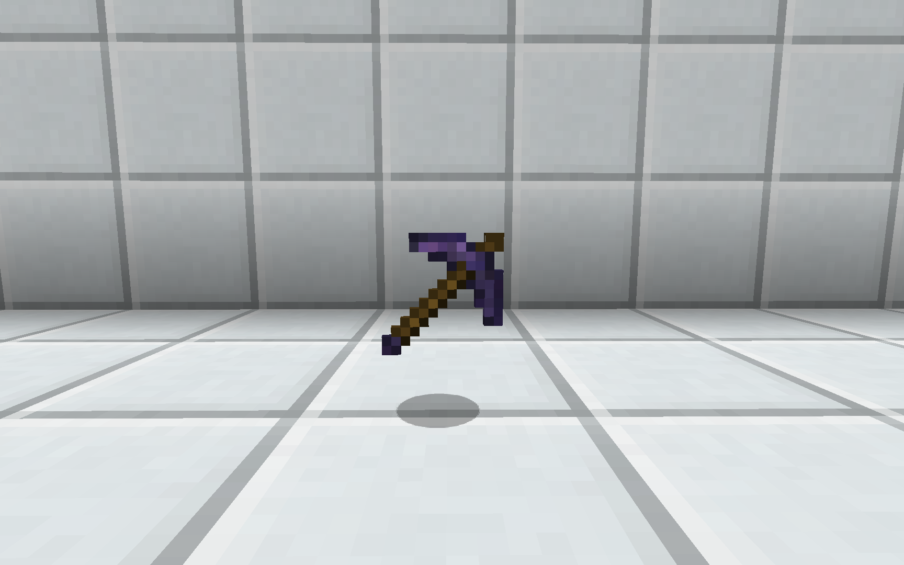
Obsidian Pickaxe
You get the pickaxe for free at the start of the game. It's meant for mining, but also serves as a hefty melee weapon!
Rules & Information Reference Document
Arms Race is a modded Minecraft game mode where two teams of players race to build the best weapons, fight their way to the enemy base, and destroy it.
This page presents all the information for both new and experienced players.
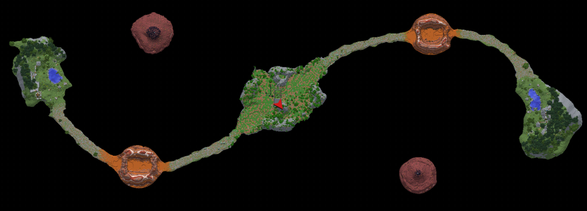

You get the pickaxe for free at the start of the game. It's meant for mining, but also serves as a hefty melee weapon!
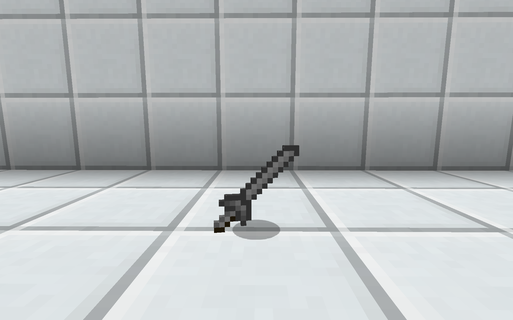
Hold right-click, jump, and release to launch yourself into the air. Very useful for mobility & dodging shots.
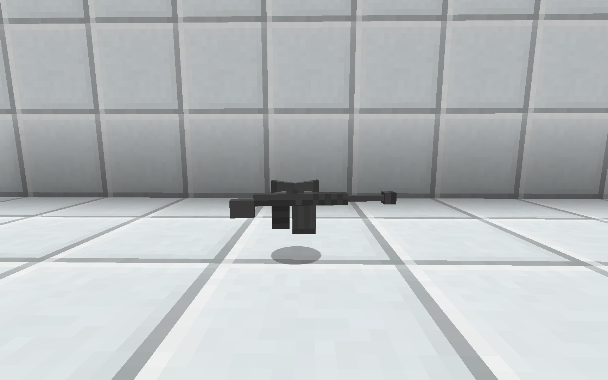
Most common early game weapon. Can kill from long range if you compensate for bullet drop. Slower DPS than many other weapons. Headshots deal double damage!
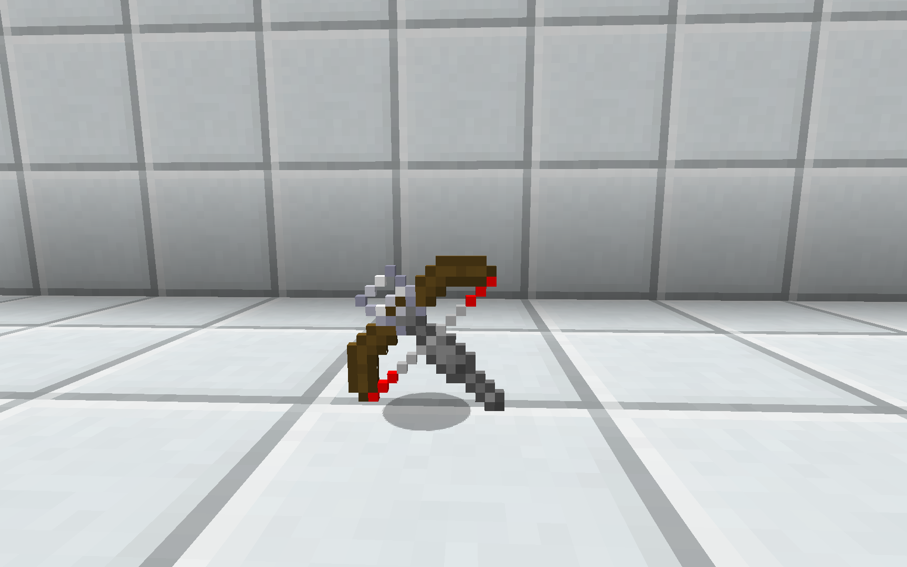
Mid-range, rapid-fire crossbow. Can shoot while running, arc shots over walls, and get kills quickly. Requires significant time investment to get, however.
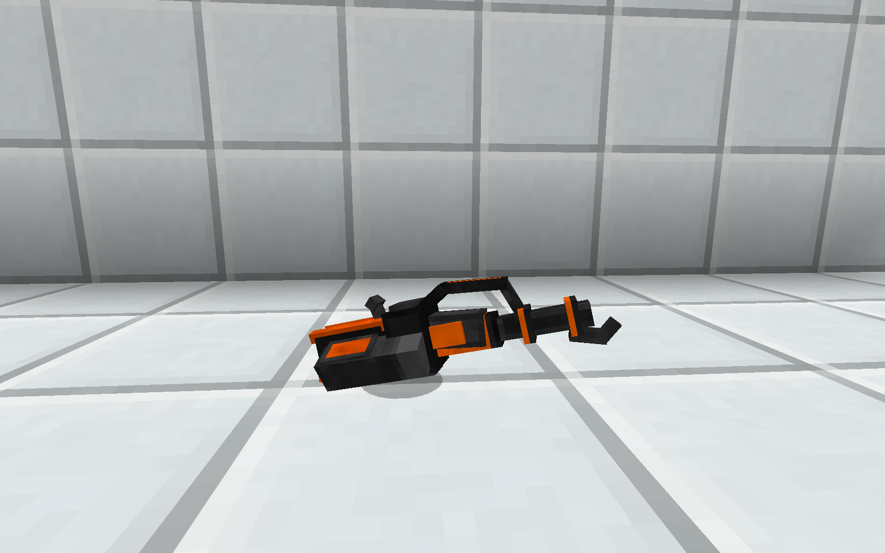
Shoots a stream of slow-moving flame. Excellent at close range and in confined spaces. Requires hydrogen gas production, but once set up, the fuel is essentially free.
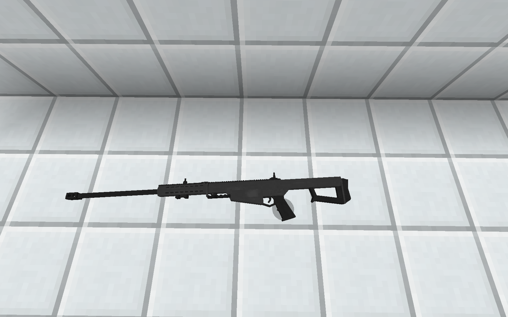
More powerful but more expensive than Flans Mod counterpart, requiring steel. Has a higher rate of fire, less kickback, more DPS.
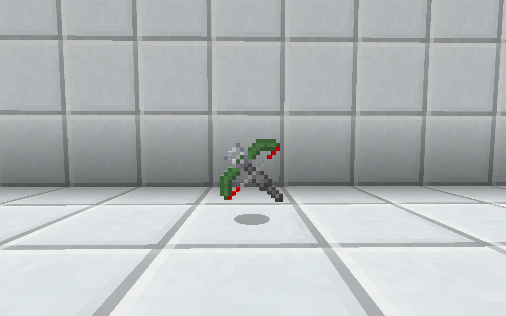
Longer range and slightly reduced rate of fire compared to Wooden Crossbow. It's also more expensive, requiring a chemical lab & cactus green dye to produce the slime.
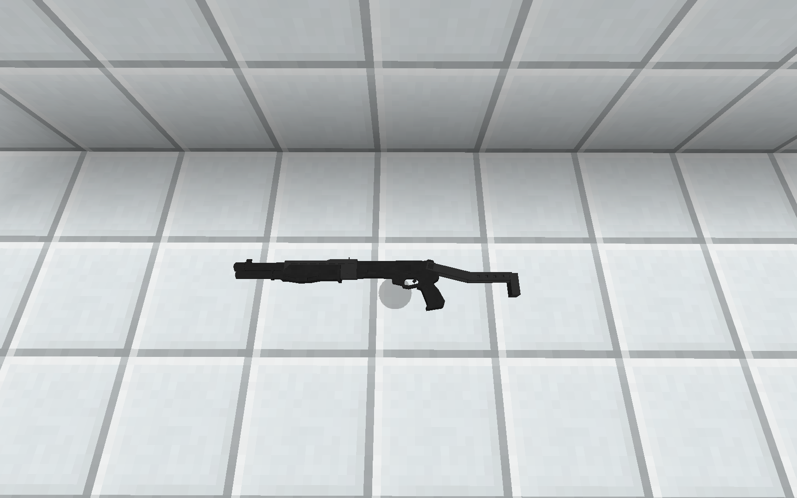
Powerful short range weapon. Useful range is longer than the flamethrower, and shots fly faster, but it's more expensive and can chew through ammunition quickly.
Elite mid-range machine gun. Unmatched rate of fire & DPS. Expensive to make & supply with ammunition, but you get 200 rounds included with the magazine.
Using for blasting enemies out of entrenched positions. Because of the explosive damage, your aim does not have to be perfect. The GL1 is cheaper while the GL6 can load six grenades at once.
Powerful sustained fire but with impaired mobility & accuracy. Requires ~1 second charge up time to begin firing.
Throwable grenade. Slightly lower range than the launcher & requires fibreglass instead of iron.
Significantly less expensive alternative to Modern Warfare Barrett with lower rate of fire but respectable damage & cheap ammunition.
Slightly more accuracy & rate of fire than Flans Barrett but with less damage per shot.
Significantly longer range but slower rate of fire than other crossbows.
Can fire missiles from the ICBM mod. Tremendous theoretical power but few have managed to get it & the missiles.

Consists of an enrichment chamber and energized smelter. Place ores in the hopper/chest on the left and get two ingots per ore on the right!
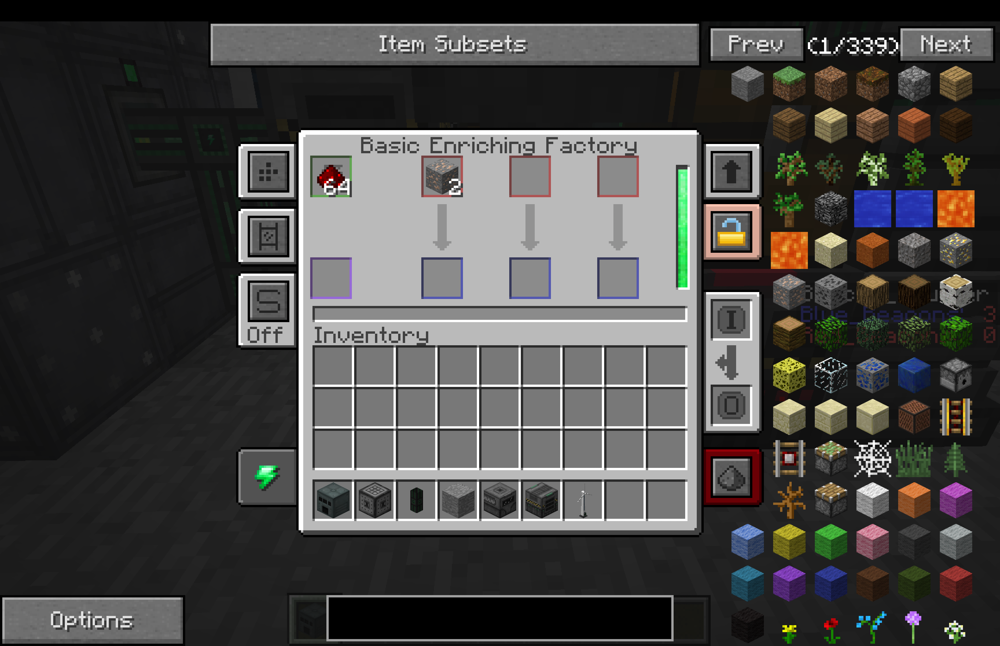
You can put redstone dust into machines from the Mekanism mod to power them if you have no better power source. It generally uses one dust per operation.

Most common first energy source. Requires visibility to the sky to function. Infamously requires six gold bars per generator as well.

A setup with two metallurgic infusers (that feed into the energized smelter) to automate steel production.

A machine with two crushers and a sag mill to automatically produce gunpower from cobblestone. The hoppers are required by a rule to protect against a nasty crash.

The rolling machine (on the right) is reuquired to produce high-tier vehicles such as planes, helicopters, and tanks. The alloy smelter (on the left) is needed to make the Rolling Machine.
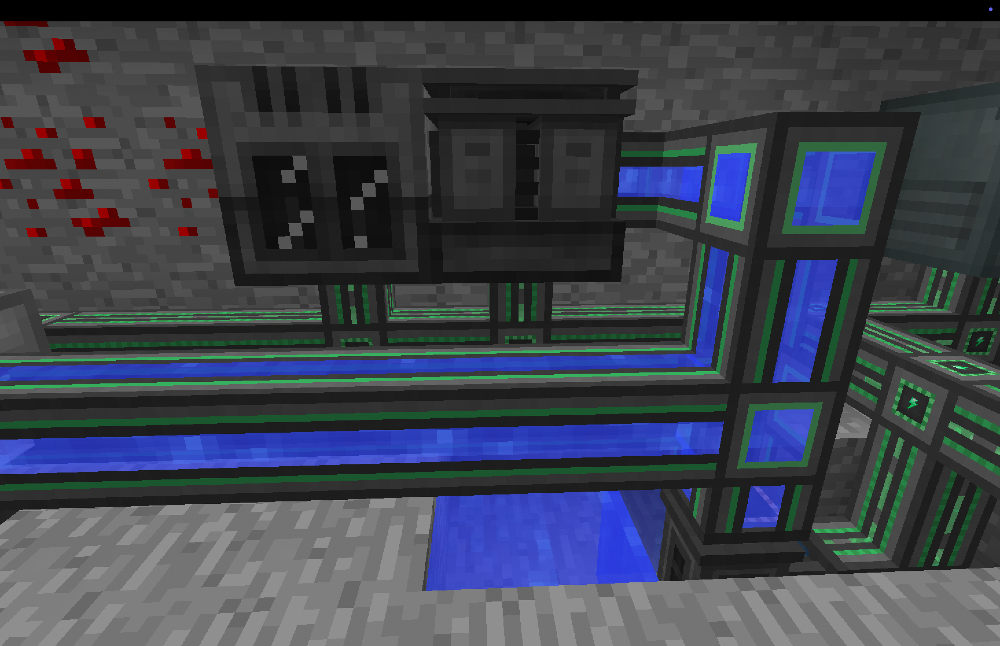
Used for producing sulfur (for shotgun shells), clay, and other items. Requires an input of water vapor from a rotary condensentrator & electric pump.
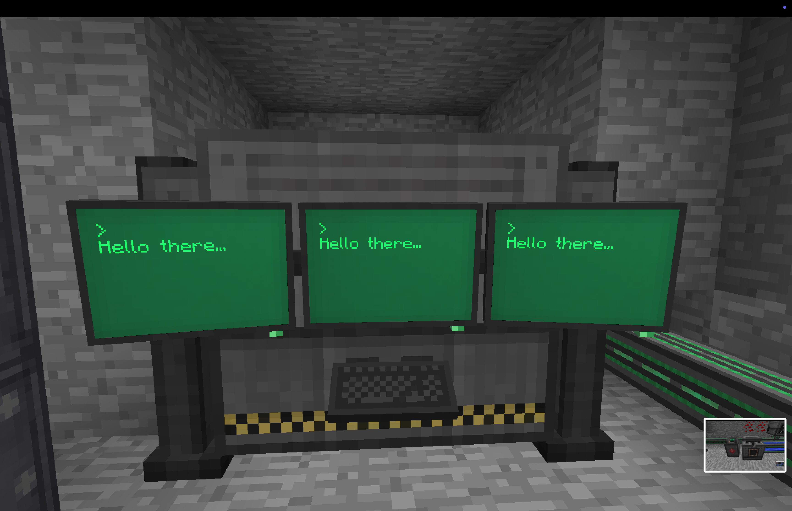
Will automatically mine ores. If you manage to make one of these you should have no shortage of resources!
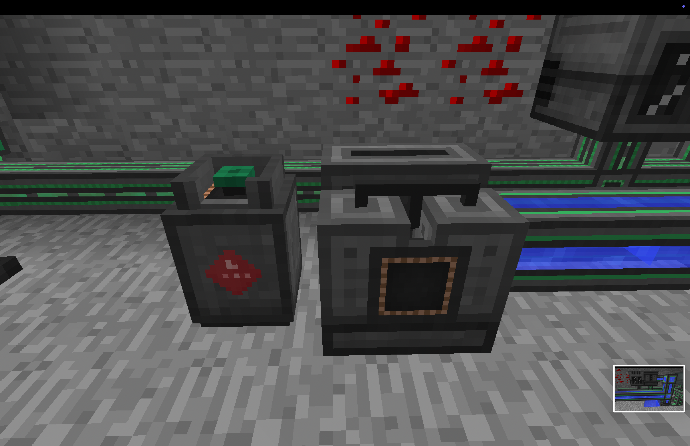
Produces Hydrogen and Oxygen gasses from Water. Useful for fueling the Flamethrower.

Even the smallest Big Reactor produces more power than most people ever need. Requires a lot of Iron, Coal, and Yellorite.